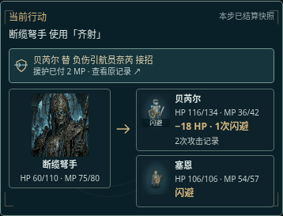

看清伙伴，为谁接下这一击。
手机战场显示真实援护原因与尝试费用，可进入原记录核对，再返回同一步行动。

此为原生 SVG 动作的浏览器采样：8 帧、900 毫秒循环，GIF 使用 256 色共享调色板；PNG 表保留八帧原始 RGBA。实际游戏继续使用原图形、原动画效果与同一时间轴，不加载此 GIF。减少动态偏好显示首帧静图。
采样来源与范围
隔离副本中的普通第84次护送，援护原记录51；完整本步记录48–56。动作帧采样沿原动作时间，不是新生成的角色动作，也不是原版服务器规则。公开站交互与旧站存档迁移仍未验证。